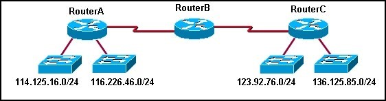
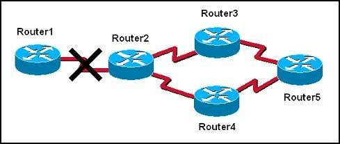
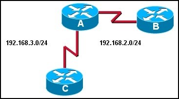
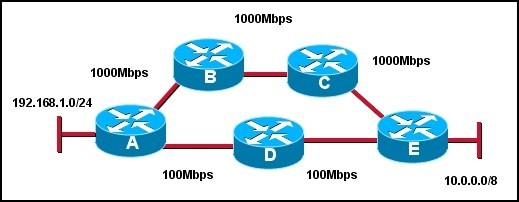
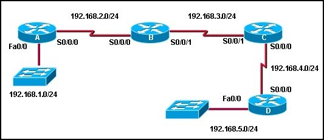

Chapter 4 – CCNA 2
01. Which event will cause a triggered update?
- an update routing timer expires;
- a corrupt update message is received;
- a route is installed in the routing table;
- the network is converged.
02. Three routers running a distance -vector routing protocol lost all power, including the battery backups. When the routers reload, what will happen?
- They will share all routes saved in NVRAM prior to the power loss with the ir directly connected neighbors;
- They will multicast hello packets to all other routers in the network to establish neighbor adjacencies;
- They will send updates that include only directly connected routes to the ir directly connected neighbors;
- They will broadcast their full routing table to all routers in the network.
03. What does the RIP hold down timer do?
- ensures an invalid route has a metric of 15;
- prevents a router from sending any updates after it has introduced a routing loop into the network;
- ensures every new route is valid before sending an update;
- instructs routers to ignore updates, for a spe cified time or event, about possible inaccessible routes.
04. Which two statements are true regarding the function of the RIPv1 routing updates? (Choose two).
- updates are broadcast only when there are changes to the topology;
- updates are broadcast at regular intervals;
- broadcast are sent to 0.0.0.0;
- broadcasts are sent to 255.255.255.255;
- updates contain the entire network topology;
- only changes are included in the updates.
05. Which of the following statements are correct about RIP?
- uses a broadcast to update all other routers in the network every 60 seconds;
- uses a multicast address to update other routers every 90 seconds;
- will send out an update if there is a failure of a link ;
- updates only contain information about routes that have changed since last update.
06. Which two statements describe EIGRP? (Choose two.)
- EIGRP can be used with Cisco and non-Cisco routers;
- EIGRP sends triggered updates whenever there is a change in topology that influences the routing information;
- EIGRP has an infinite metric of 16;
- EIGRP sends a partial routing table update, which includes jus t routes that have been changed;
- EIGRP broadcasts its updates to all routers in the network.
07.Which statement is true regarding cisco’s RIP_JITTER variable?
- It prevents the synchronization of routing updates by buffering the updates as they leave the router interfaces;
- It prevents the synchronization of routing updates by subtracting a random length of time ranging from 0% to 15% of the specified interval time from the next routing update interval;
- It prevents the synchronization of routing updates by causing the router to skip every other scheduled update time;
- It prevents the synchronization of routing updates by forcing the router to listen when its time for other updates on the lines before sending its update.
08.  What actions will occur after RouterA loses connectivity to network 114.125.16.0? (Choose two.)
- RouterB will include network 123.92.76.0 and 136.125.85.0 in its update to RouterA;
- During the next update interval, RouterB will send a RIP update out both ports that includes the inaccessible network;
- During the next update interval, RouterC will send an update to RouterB stating that network 114.125.16.0 is accessible in 2 hops;
- Router C will learn of the loss of connectivity to ne twork 114.125.16.0 from RouterB;
- RouterB will include network 123.92.76.0 and 36.125.85.0 in its update to RouterC.
09.Which of the following methods does split horizon use to reduce incorrect routing information?
- Routing updates are split in half to reduce the update time;
- Information learned from one source is not distributed back to that source;
- New route information must be learned from multiple sources to be accepted;
- The time between updates is split in half to speed convergence;
- New route information is suppressed until the system has converged.
10.  The graphic shows a network that is configured to use RIP routing protocol. Router2 detects that the link to Router1 has gone down. It then advertises the network for this link with a hop count metric of 16. Which routing loop prevention mechanism is in effect?
- split horizon;
- error condition;
- hold-down timer;
- route poisoning;
- count to infinity.
11. What is the purpose of the TTL field in the IP header?
- used to mark routes as unreachable in updates sent to other routers;
- prevents regular update messages from reinstating a route that may have gone bad;
- prevents a router from advertising a network through the interface from which the update came ;
- limits the time or hops that a packet can traverse through the network before it should be discarded;
- defines a maximum metric value for each distance vector routing protocol by setting a maximum hop count.
12. Which of the following can exist in a distance vector network that has not converged? (Choose three.)
- routing loops;
- inconsistent traffic forwarding;
- no traffic forwarding until system converges;
- inconsistent routing table entries ;
- routing table updates sent to wrong destinations.
13. Refer to the exhibit. The routers in this network are running RIP. Router A has not received an update from Router B in over three minutes. How will Router A respond?
- The Holddown timer will wait to remove the route from the table for 60 seconds;
- The Invalid timer will mark the route as unusable if an update has not been received in 180 seconds;
- The Update timer will request an update for routes that were learned from Router B;
- The Hello timer will expire after 10 seconds and the route will be flushed out of the routing table.
14. A network administrator is evaluating RIP versus EIGRP for a new network. The network will be sensitive to congestion and must respond quickly to topology changes. What are two good reasons to choose EIGRP instead of RIP in this case? (Choose two.)
- EIGRP uses periodic updates;
- EIGRP only updates affected neighbors;
- EIGRP uses broadcast updates;
- EIGRP updates are partial;
- EIGRP uses the efficient Bellman-Ford algorithm.
15.  Refer to the exhibit. What path will packets from the 192.168.1.0/24 network travel to reach the 10.0.0.0/8 network if RIP is the active routing protocol?
- The path will be router A -> router B -> router C -> router E;
- The path will be router A -> router D -> router E;
- Router A will load balance between the router A -> router D -> router E and router A -> router B -> router C -> router E paths;
- Packets will alternate paths depending on the order they arrive at router A.
16. Which three routing protocols are distance vector routing protocols? (Choose three).
- RIPv1;
- EIGRP;
- OSPF;
- IS-IS;
- RIPv2.
17. What is a routing loop?
- a packet bouncing back and forth between two loopback interfaces on a router;
- a condition where a return path from a destination is different from the outbound path forming a “loop”;
- a condition where a packet is constantly transmitted within a series of routers without ever reaching its intended destination;
- the distribution of routes from one routing protocol into another.
18. Which two conditions are most likely to cause a routing loop? (Choose two.)
- random jitter;
- implementation of classful addressing;
- inconsistent routing tables;
- incorrectly configured static routes ;
- a network converging too quickly.
19. What metric does the RIP routing protocol cons ider to be infinity?
- 0
- 15
- 16
- 224
- 255
20. Refer to the exhibit. If all routers are using RIP, how many rounds of updates will occur before all routers know all networks?
- 1
- 2
- 3
- 4
- 5
- 6
21. What does a router running RIP do first with a new route that is received from an advertisement?

{kind=link}
{kind=link}
{kind=link}
{kind=link}
{kind=link}